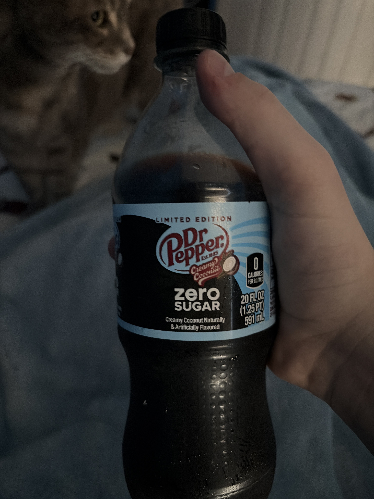

Smells like coconut and Dr Pepper. Shocking, I know
First tiny sip
Hrmmmm
Medium coconut initially
Then strong on the coconut
And then the coconut fades into a more passive coconut
Can't really hint out the cream in a tiny sip
Strong Dr. Pepper base
Big sip
Dr Pepper base still present
Initial coconut is... strange
Develops and then falls back
The aftertaste is like coconut ice cream flavor
Like really sweet and pleasant
Well shit that's creamy coconut
No wonder
Another big sip
The initial flavor is heavy on the Dr Pepper which combines weirdly with the coconut
Hence the "... strange"
I really like this
It really works

The bottle of Dr Pepper (with my sister's cat in the back) 🥤🐈.